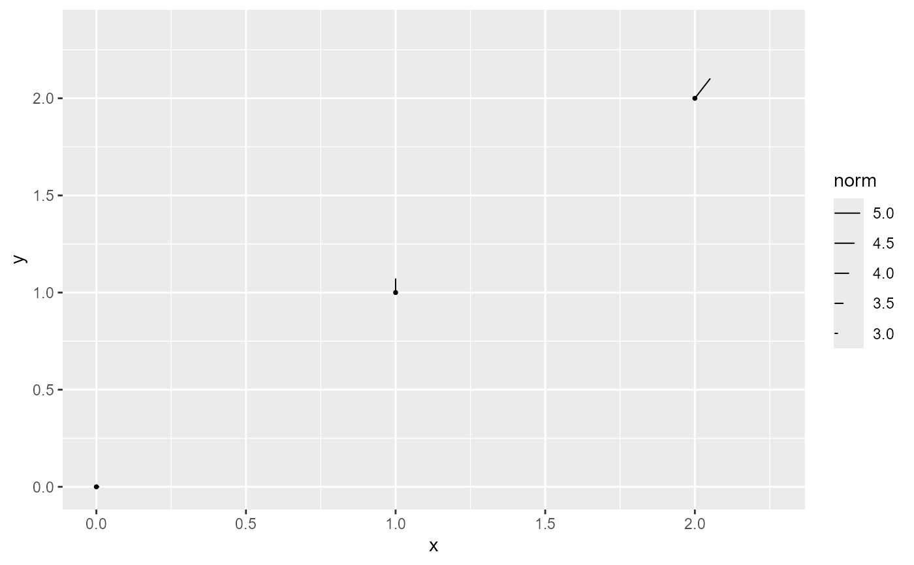
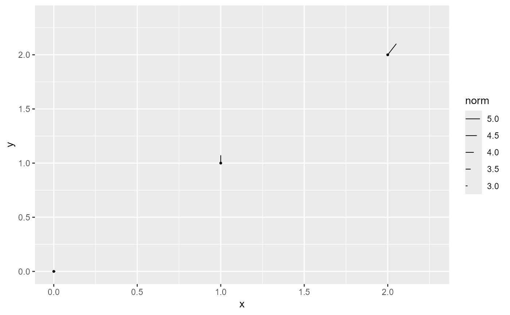

Create layers for drawing vectors on ggplot2 plots. These functions accept
wide-format data with the required aesthetics x and y plus either
xend and yend or one of the alternative specifications: fx
and fy, or angle/ angle_deg and distance.
Usage
geom_vector(
mapping = NULL,
data = NULL,
stat = StatVector,
position = "identity",
...,
na.rm = FALSE,
show.legend = NA,
inherit.aes = TRUE,
center = TRUE,
normalize = TRUE,
tail_point = FALSE,
eval_point = FALSE,
L = NULL,
arrow = grid::arrow(angle = 25, length = unit(0.025, "npc"), type = "closed")
)
stat_vector(
mapping = NULL,
data = NULL,
geom = GeomStream,
position = "identity",
...,
na.rm = FALSE,
show.legend = NA,
inherit.aes = TRUE,
center = TRUE,
normalize = TRUE,
tail_point = FALSE,
eval_point = FALSE,
L = NULL,
arrow = grid::arrow(angle = 25, length = unit(0.025, "npc"), type = "closed")
)
geom_vector2(
mapping = NULL,
data = NULL,
stat = StatVector,
position = "identity",
...,
na.rm = FALSE,
show.legend = NA,
inherit.aes = TRUE,
center = FALSE,
tail_point = TRUE,
eval_point = FALSE,
L = NULL,
arrow = NULL
)
stat_vector2(
mapping = NULL,
data = NULL,
geom = GeomStream,
position = "identity",
...,
na.rm = FALSE,
show.legend = NA,
inherit.aes = TRUE,
center = FALSE,
tail_point = TRUE,
eval_point = FALSE,
L = NULL,
arrow = NULL
)Arguments
- mapping
A set of aesthetic mappings created by
ggplot2::aes(). Required: Must includexandy; in addition, eitherxendandyendor one of the alternative specifications (fx/fyorangle/angle_deganddistance) must be provided.- data
A data frame containing the vector data in wide format.
- stat
The statistical transformation to use on the data (default: StatVector).
- position
Position adjustment, either as a string or the result of a position adjustment function.
- ...
Other arguments passed on to
ggplot2::layer().- na.rm
Logical. If
FALSE(the default), missing values are removed with a warning.- show.legend
Logical. Should this layer be included in the legends?
- inherit.aes
Logical. If
FALSE, overrides the default aesthetics rather than combining with them.- center
Logical. If
TRUE, the vector is recentered so that the original(x, y)becomes the midpoint (default isTRUEforgeom_vector()andFALSEforgeom_vector2()).- normalize
Logical. If
TRUE, the vector endpoints are scaled to unit length before being scaled byL(default:TRUE).- tail_point
Logical. If
TRUE, a point is drawn at the tail (the starting point) of each vector (default isFALSEforgeom_vector()andTRUEforgeom_vector2()).- eval_point
Logical. If
TRUE, a point is drawn at the evaluation point corresponding to the original (untransformed) seed point before any centering or normalization (default:FALSE).- L
Numeric scalar. The desired length for the vectors in data units. If
NULL(the default), a value is computed automatically based on the plot’s x and y limits.- arrow
An optional
grid::arrow()specification to add arrowheads to the vectors (default:grid::arrow(angle = 25, length = unit(0.025, "npc"), type = "closed")).- geom
The geometric object used to render the streamline (only used in
stat_stream(); defaults to GeomStream).
Details
When specifying the vector direction using polar coordinates, you can provide either:
angle: the vector direction in radians.angle_deg: the vector direction in degrees (which is automatically converted to radians).
The endpoints are computed by translating the starting point using these
polar coordinates along with the supplied distance.
The data is converted to long format (two rows per vector) via StatVector and rendered with GeomStream. Optionally, arrowheads can be added to indicate direction.
There are two variants:
geom_vector(): Uses the user-supplied aesthetic mapping.geom_vector2(): Uses the same underlying stat (StatVector) but adds a default mapping forlength = after_stat(norm), making the computed vector norm available as an aesthetic.
Aesthetics
geom_vector() and geom_vector2() understand the following aesthetics
(required aesthetics are in bold):
x
y
xend
yend
fx (alternative specification)
fy (alternative specification)
angle (vector direction in radians; alternative specification)
angle_deg (vector direction in degrees; alternative specification, converted to radians)
distance (with angle/angle_deg, used to compute endpoints)
alpha
color
fill
group
linetype
size
Computed Variables
These are calculated by the 'stat' part of layers and can be accessed with delayed evaluation.
- norm
Calculated as the Euclidean distance between the starting point (
x,y) and the computed endpoint (xend,yend). This value is used to normalize the vector length when thenormalizeparameter is set toTRUE.
Examples
set.seed(1234)
n <- 10
# Generate wind data in polar coordinates
data <- data.frame(
x = rnorm(n),
y = rnorm(n),
dir = runif(n, -pi, pi), # angle in radians
spd = rchisq(n, df = 2) # speed
) |>
transform(fx = spd * cos(dir), fy = spd * sin(dir))
# Using fx/fy to compute endpoints
ggplot(data, aes(x, y)) +
geom_vector(aes(fx = fx, fy = fy))
 # Using angle (in radians) and distance to compute endpoints
ggplot(data, aes(x, y)) +
geom_vector(aes(angle = dir, distance = spd))
# Using angle (in radians) and distance to compute endpoints
ggplot(data, aes(x, y)) +
geom_vector(aes(angle = dir, distance = spd))
 # Using angle_deg (in degrees) and distance to compute endpoints
vectors3 <- data.frame(
x = c(0, 1, 2),
y = c(0, 1, 2),
angle_deg = c(0, 90, 45),
angle = c(0, pi/2, pi/4),
distance = c(3, 4, 5)
)
ggplot(vectors3, aes(x, y)) +
geom_vector(aes(angle_deg = angle_deg, distance = distance))
# Using angle_deg (in degrees) and distance to compute endpoints
vectors3 <- data.frame(
x = c(0, 1, 2),
y = c(0, 1, 2),
angle_deg = c(0, 90, 45),
angle = c(0, pi/2, pi/4),
distance = c(3, 4, 5)
)
ggplot(vectors3, aes(x, y)) +
geom_vector(aes(angle_deg = angle_deg, distance = distance))
 # Basic usage with explicit start and end points:
vectors1 <- data.frame(
x = c(0, 1, 2),
y = c(0, 1, 2),
xend = c(3, 1, 5),
yend = c(0, 5, 6)
)
ggplot(vectors1, aes(x = x, y = y, xend = xend, yend = yend)) +
geom_vector()
# Basic usage with explicit start and end points:
vectors1 <- data.frame(
x = c(0, 1, 2),
y = c(0, 1, 2),
xend = c(3, 1, 5),
yend = c(0, 5, 6)
)
ggplot(vectors1, aes(x = x, y = y, xend = xend, yend = yend)) +
geom_vector()
 # Using center = TRUE to recenter vectors:
ggplot(vectors1, aes(x = x, y = y, xend = xend, yend = yend)) +
geom_vector(center = TRUE)
# Using center = TRUE to recenter vectors:
ggplot(vectors1, aes(x = x, y = y, xend = xend, yend = yend)) +
geom_vector(center = TRUE)
 # Using normalize = TRUE to adjust vectors to unit length:
ggplot(vectors3, aes(x = x, y = y, angle = angle, distance = distance)) +
geom_vector(normalize = TRUE)
# Using normalize = TRUE to adjust vectors to unit length:
ggplot(vectors3, aes(x = x, y = y, angle = angle, distance = distance)) +
geom_vector(normalize = TRUE)
 # Using geom_vector2, which adds a default mapping for `length`
ggplot(vectors1, aes(x = x, y = y, xend = xend, yend = yend)) +
geom_vector2()

# Using geom_vector2, which adds a default mapping for `length`
ggplot(vectors1, aes(x = x, y = y, xend = xend, yend = yend)) +
geom_vector2()
